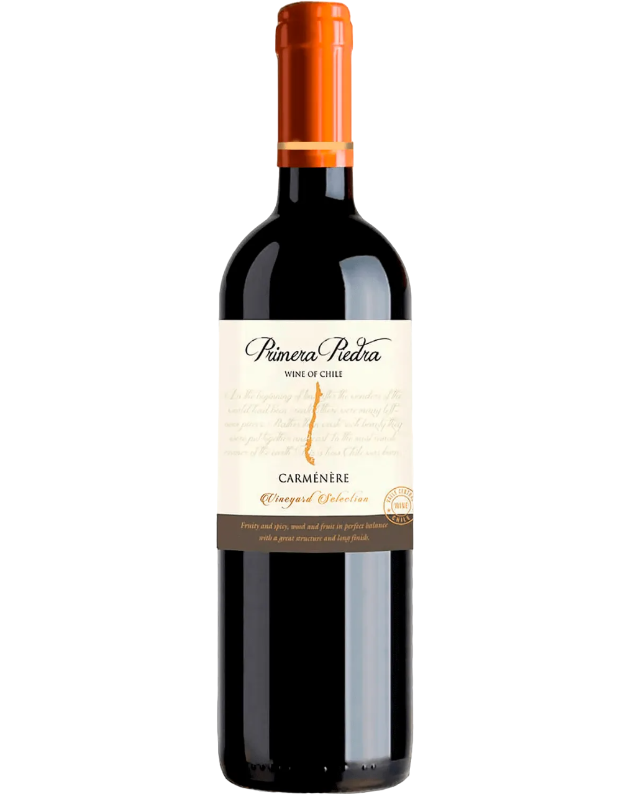
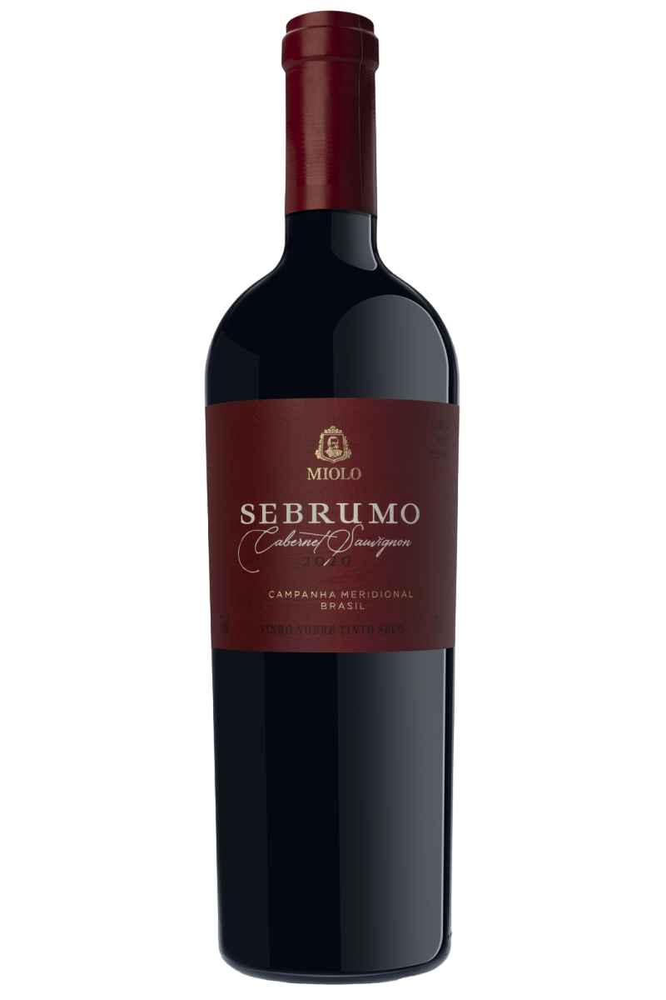
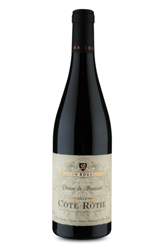
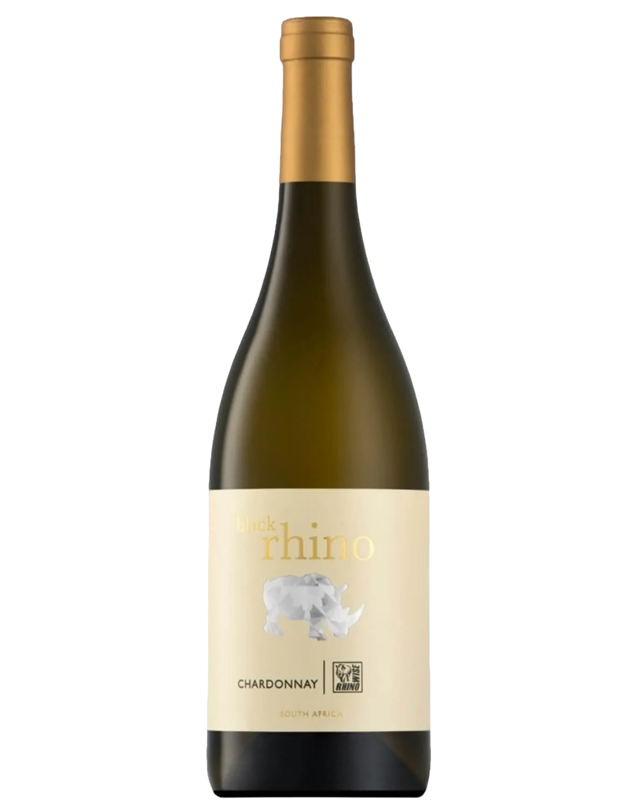
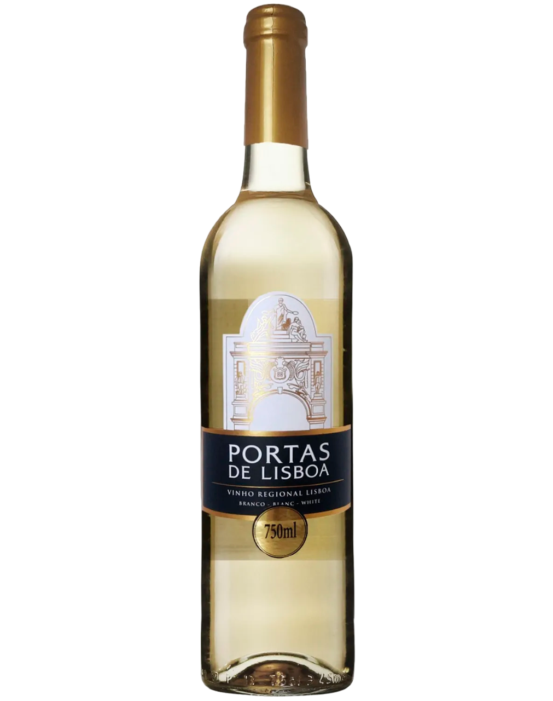
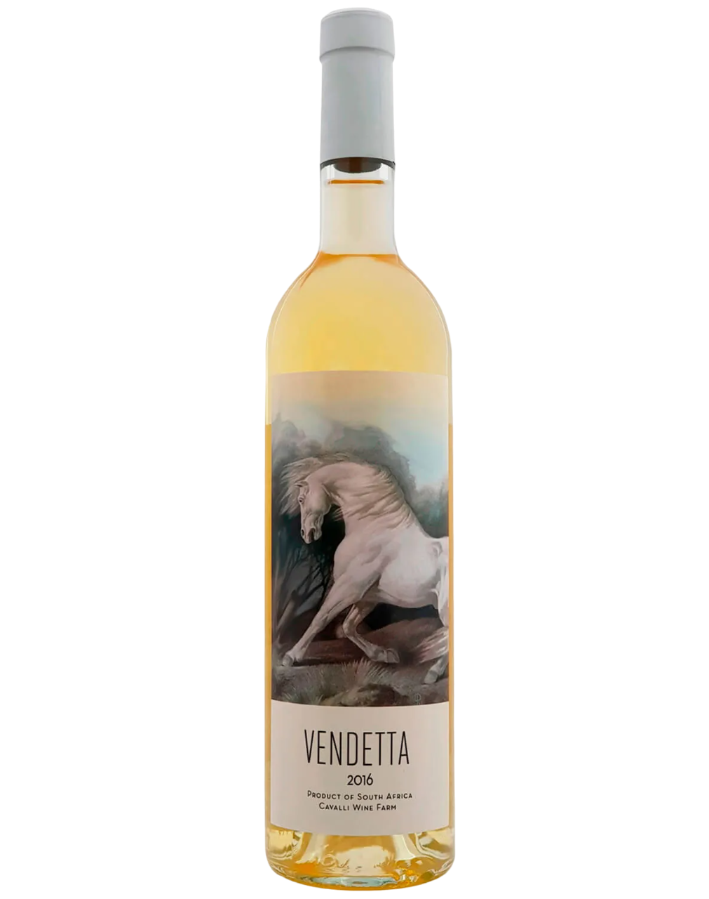
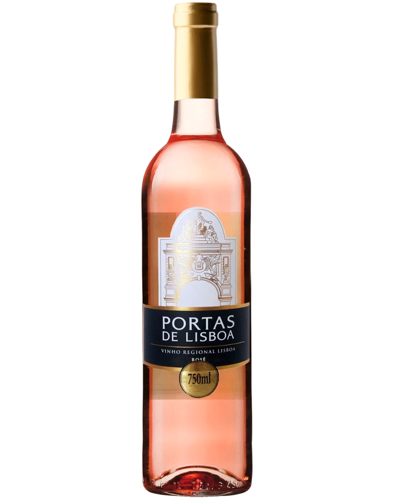
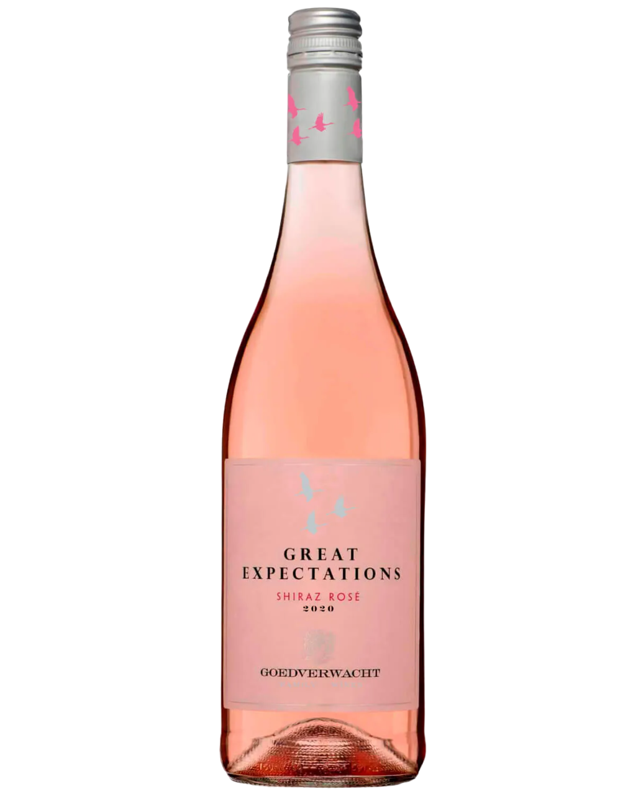
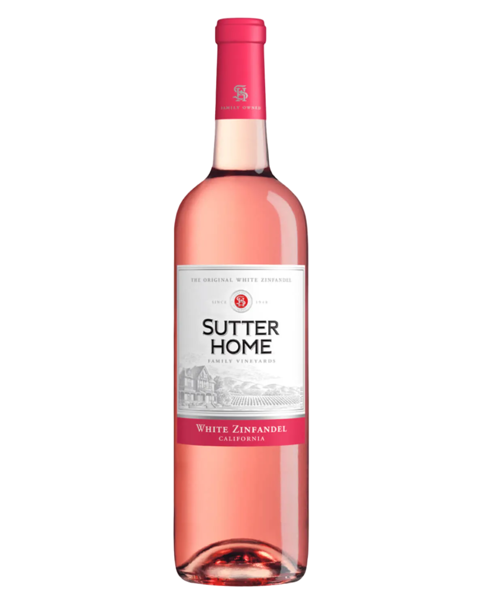

Valle Central, Chile |
Campanha Meridional, Brasil |
Côte Rôtie, França |
|||
|---|---|---|---|---|---|
|  |  |  | |||
|
O premiado vinho chileno Primeira Piedra foi produzido pela primeira vez em 1995 pela vinícola Viñedo Chadwick, é feito com uvas Cabernet Sauvignon e Syrah cultivadas em vinhedos localizados no Vale do Maipo |
O vinho brasileiro Cabernet Sauvignon remonta à década de 1970, quando a uva foi introduzida no país. Desde então, vinícolas em diferentes regiões do Brasil cultivaram a variedade e produziram vinhos premiados e reconhecidos internacionalmente. |
O Prince de Monvert é um vinho tinto produzido pela Maison Bouachon, com uvas cultivadas na região de Gard, e que apresenta notas de frutas vermelhas e especiarias. A Maison Bouachon é uma vinícola francesa fundada em 1898 no Vale do Rhône |
Wellington, África do Sul |
Lisboa, Portugal |
Stellenbosch, África do Sul |
|||
|---|---|---|---|---|---|
|  |  |  | |||
|
A uva Chardonnay tem origem na região da Borgonha, e é considerada uma das uvas brancas mais populares e versáteis do mundo. É amadurecida em 12 meses em barris de carvalho franceses selecionados, e apresenta um visual amarelo intenso |
É produzido pela Casa Santos Lima, o maior produtor de vinho regional de Lisboa, além de ser um dos produtores portugueses mais premiados intercionalmente. O vinho é produzido em uma das regiões mais férteis, e a influência marítima contribui na produção de vinhos com boa acidez |
Cavalli é uma 'marca de destino' reconhecida por seu vinho, gastronomia, design, arquitetura, paisagismo indígena e arte. Os vinhedos de Viognier são de cultivo delicado, as uvas devem ser colhidas perfeitamente amadurecidas para atingir seu potencial aromático. Tem um visual amarelo dourado, e aroma de pêssego e flor de mel |
Lisboa, Portugal |
Wellington, África do Sul |
Califórnia, Estados Unidos |
|||
|---|---|---|---|---|---|
|  |  |  | |||
|
A vinheria se localiza a 45 km do Norte de Lisboa, com posição privilegiada em relação ao sol e ao clima temperado da região. o vinho tem notas gustativas intensas das frutas silvestres morango e framboesa. É um vinho meio seco |
Great Expectations Shiraz Rosé é um vinho rosé produzido a partir da uva Shiraz, originária da Austrália. É conhecido por seu sabor frutado e fresco, com notas de morango e framboesa, e é uma opção popular para quem busca um vinho rosé de qualidade com excelente relação custo-benefício |
O vinho Sutter Home White Zinfandel foi criado por acidente em 1972, quando uma fermentação interrompida resultou em um vinho rosé doce. Esse acidente se transformou em sucesso, tornando-se um dos vinhos mais populares nos Estados Unidos, conhecido por seu sabor adocicado e leve. |